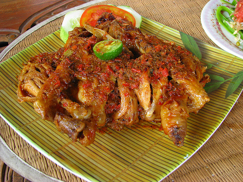
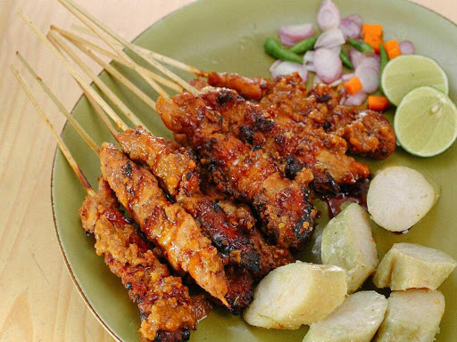

Food in Bali

Top 4 Dishes from Bali
Bali's most renowned dishes, made rich by the heavy use of local herbs and spices, are traditionally eaten during the colorful Hindu ceremonies that punctuate life on the Indonesian island. Dining out is a relatively recent development in Bali -- a few generations ago people may have grabbed takeaway from warungs (small shops and restaurants) but generally did not go out to eat.
Babi guling (suckling pig)
Pork dishes are relatively hard to find across the mostly Muslim Indonesian archipelago, but Bali's famed suckling pig makes any roaming traveler's wait worthwhile. While strictly speaking a suckling pig should still be feeding on its mother's milk, in Bali the pigs used in this popular dish can weigh about 70 kilograms (150 pounds). They are rubbed with turmeric then stuffed with a "base gede," or spice paste, which usually includes a combination of coriander seeds, lemongrass, Asian lime leaves and salam leaves, chillies, black pepper, garlic, red shallots, ginger and kencur (lesser galangal). The pig is roasted on a spit over coconut husks or wood to tender perfection.
Lawar
Lawar is a crunch-tender mix of vegetables, grated coconut meat and minced meat mixed with various heady herbs and spices, and often fresh blood -- every village has its own version. While it's the usual accompaniment to babi guling, lawar can stand as a dish in its own right -- lawar nangka, or young jackfruit lawar, is an example.
Bebek betutu (slow cooked duck)
Another ceremonial dish, bebek betutu needs to be cooked for so long that you'll have to order it a day in advance. Chef Penny Williams from Bali Asli (Jalan Raya Gelumpang, Gelumpang, Amlapura) explains that the duck is first rubbed with tamarind puree and salt to purify any "ducky" aromas and tenderize the meat. This is then washed off and the bird (chicken is often used instead) is stuffed with eggs, cassava leaves and bumbu rajeng, a spice mix specifically created for this dish. It's then wrapped in "upeh," or betel nut husks, and slow cooked until the meat falls off the bone.
Sate lembat
Bali's take on satay, the classic meat-on-a-stick dish found across the Indonesian archipelago, is minced meat pounded in a mortar and pestle with young grated coconut and a bumbu, or spice mixture, that varies according to region. It may be similar to the pastes used in babi guling or bebek betutu but perhaps with cardamom, cinnamon, nutmeg, tamarind or cumin seeds also making an appearance. The seasoned meat is shaped around a split bamboo skewer and quickly barbecued, often while hand-fanned, over hot coals. Forget the peanut sauce found elsewhere, sate in Bali is accompanied with shrimp paste-based sambal "matah", meaning raw or alive.